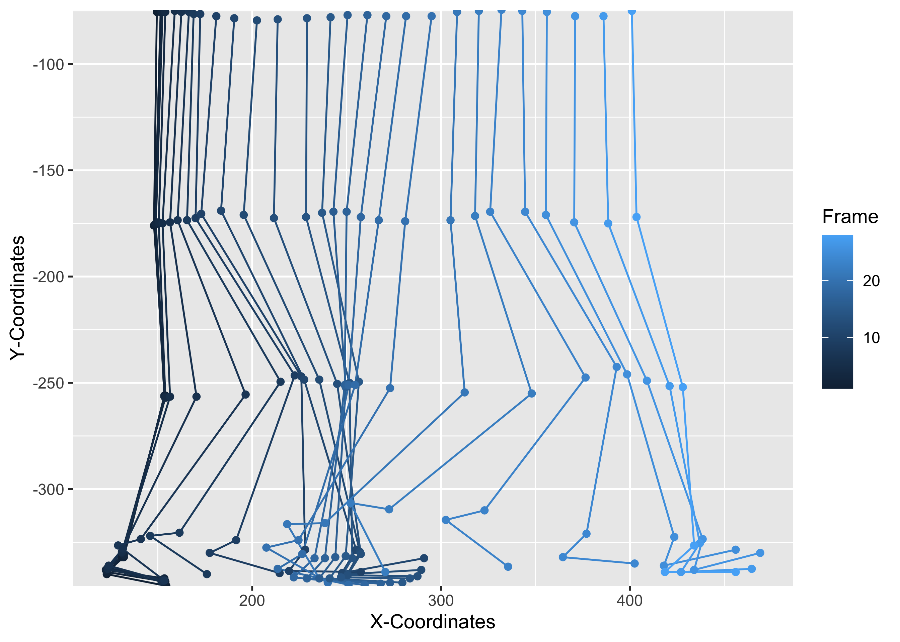
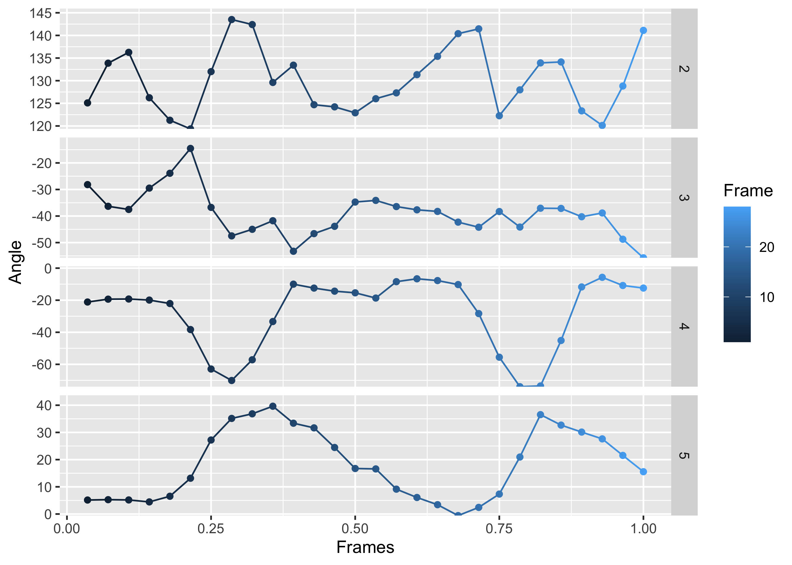
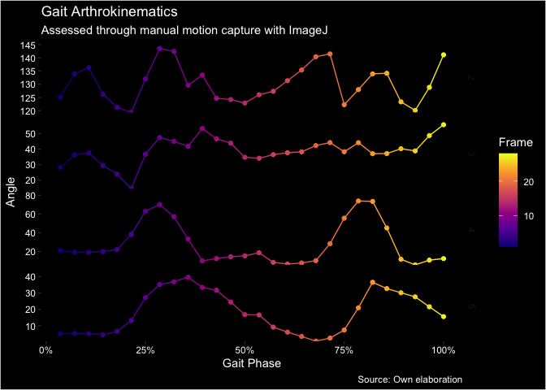

The goal of kinemov is to provide a simple and easy to use interface to visualize and analyze 2-dimensional motion capture data.
Installation
You can install the development version of kinemov like so:
# install.packages("devtools")
devtools::install_github("matcasti/kinemov")Example
You can try using the example dataset gait this way:
library(kinemov)
plot_motion(gait, x_coord, y_coord, frame) 
You can also plot the degrees between joints in this way:
fig <- plot_degrees(gait, x_coord, y_coord, joint, frame)
fig
As it is a ggplot object, you can further customize the output object:
library(ggplot2)
library(scales)
fig +
labs(title = "Gait Arthrokinematics",
subtitle = "Assessed through manual motion capture with ImageJ",
caption = "Source: Own elaboration") +
scale_color_viridis_c(option = "C") +
scale_x_continuous(labels = label_percent()) +
theme(plot.background = element_rect(fill = "black"),
panel.background = element_rect(fill = "black"),
strip.background = element_rect(fill = "black"),
legend.background = element_rect(fill = "black"),
panel.grid = element_blank(),
text = element_text(colour = "white"),
axis.text = element_text(colour = "white"))
And from the plot_degrees() function, you can also only extract the degrees by specifying plot = FALSE:
out <- plot_degrees(gait, x_coord, y_coord, joint, frame, plot = FALSE)
subset(out, !is.na(angle)) |> head()
#> joint frame x_coord y_coord angle
#> 29 2 1 123.0 340.0 125.0958
#> 30 2 2 123.0 339.0 133.8656
#> 31 2 3 122.5 338.0 136.2633
#> 32 2 4 123.5 337.0 126.2360
#> 33 2 5 123.5 337.5 121.2637
#> 34 2 6 124.0 336.0 119.3529One can further process the output data.frame to better describe the angles for each joint and for each frame:
library(data.table)
out <- as.data.table(out)
out[i = !is.na(angle),
j = list(min = min(angle),
mean = mean(angle),
median = median(angle),
max = max(angle)) |>
lapply(round),
by = joint]
#> joint min mean median max
#> <int> <num> <num> <num> <num>
#> 1: 2 119 130 129 144
#> 2: 3 15 39 38 56
#> 3: 4 6 28 19 74
#> 4: 5 1 18 17 40